Recent Projects
Check out some of my latest projects and learn about the technologies I used
COST-EFFECTIVE LIDAR DEVICE
Technologies: TI MSP-EXP432E401Y microcontroller, VL53L1X time of flight (ToF) sensor, Python, C, Keil, stepper motor
Description
The device uses a TI MSP-EXP432E401Y microcontroller and a VL53L1X time of flight (ToF) sensor to create a 3D spatial mapping of its surroundings indoors. 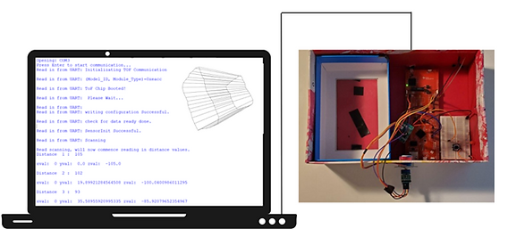 The distance measurements are communicated from the ToF sensor to the microcontroller via I2C communication. Next, the measurements are sent to the user's PC via UART communication.
How it works
The device operates using four main stages: signal processing, communication stage, data processing and data visualization.
The user starts the Python program and C code program in Keil. The stepper motor will rotate the ToF sensor in specified increments to collect data for a 360-degree scan. The user will then move the device forward a specific distance along the hall and click 'continue' on the Python program. These steps are repeated until sufficient scans are taken. A point cloud and visualization are then shown of the scanned room.
An example of the point cloud and the 3D scan of a hallway are shown below.
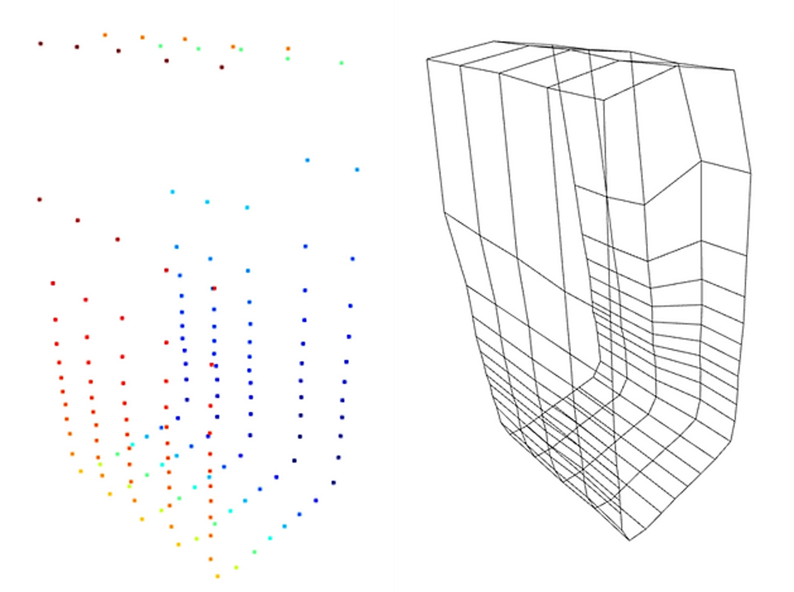DEEP LEARNING AND CHEMISTRY
Denatured
Technologies: Python, GitHub, Google Colab, TensorFlow, Keras
Description
This project was designed for the MacHacks2022 Hackathon in collaboration with two other students. Our team placed 1st in the competition. Check out the full project here.
Our project takes the reactants and products of a chemical reaction in the form of SMILES and translates them into a machine-readable format. This is done by tokenizing individual molecules for relevant chemical features. The tokenization is inspired by byte-pair-encoding that is utilized in NLP. It is able to recognize recurring subunits across databases that may be of importance. These tokens are then assigned unique IDs using a dictionary so that they can be input into our model. Each reaction is input as a series of tokens. We used a Long short-term memory (LSTM) artificial recurrent neural network (RNN) to train our classifier. The model classifies reactions based on the class of the enzyme (Enzyme Commission Number).
How it works
We used Google Colab to work in a collaborative coding setting. To translate the given data to meaningful input to our machine, we used SMILES Pair Encoding (SMILES PE). SMILES PE learns the vocabulary of SMILES substrings from the ChEMBL dataset and uses the vocabulary to tokenize the values. We then created our own library of tokens and assigned unique IDs to each token. The IDs/tokens present in each reaction were then input into our model. The model was trained using an LSTM RNN. A model was used to predict the class of the enzyme (the first EC number). The training set was then split by the main class of each reaction, and 7 subclass models were trained to predict the subclasses. When evaluating the models, the main model first predicted the class of the reaction; the reaction was then fed into the corresponding submodel to determine the second EC number.
Accomplishments we are proud of
- This was everyone on the team's first time making a deep learning (DL) model. It was exciting to see everything come together!
- This was also our team's first time working with NLP and tokenization! Finding a way to preserve key information and features while quantizing the data was something new and of great importance to us.
- Our model was able to classify reactions for the first EC number with an accuracy of 79%! We were surprised and excited about this result!
- For our team, this was one of the first projects that we worked on to bridge the gap between chemistry and computer science. It was interesting to see the intersection between the two fields and the breadth of applications for DL.
What we learned during this project
- We learned about processing language and string inputs to extract useful and quantifiable features.
- We learned how to build and test deep learning models using TensorFlow Keras.
- We learned about different tools and APIs for working with ML, such as Google Colab.
- Using Google Colab, we were able to run our model using an NVIDIA Tesla K80 GPU. This was incredibly useful as, without the GPU, our model would have taken several hours to fit. With the use of Google Colab, we were able to do this in a matter of minutes.
Rotator Cuff Tear Rehabilitation Device
Technologies: Two Adafruit BNO055 Absolute Orientation Sensors, ESP32 microcontroller, C language, Arduino IDE, MATLAB, Autodesk Inventor Professional
Description
Working alongside two students, a device that remotely monitors improvements in recovery of rotator cuff injury and/or surgery was created. Our device communicates with a Bluetooth device to provide live feedback.
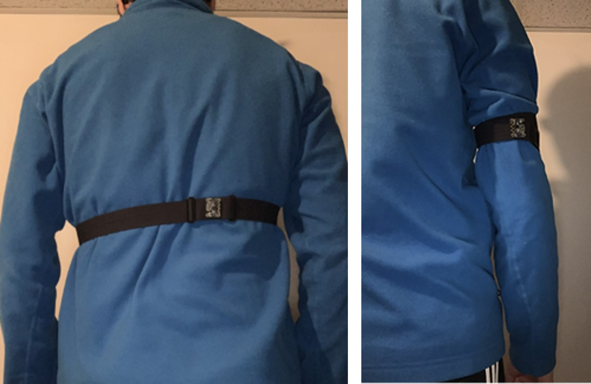First, the clinician can assign a specific exercise for their patient. When the device is started, and an exercise has been selected, the patient receives prompts that let them know if they are safely executing their exercises. In addition, the frequency of incorrect motions will be logged so that the clinician can request additional information if needed. Secondly, there will also be weekly check-ins to look at the ROM of the shoulder to track recovery.
How it works
A C program was created to interface with the sensors and collect data to be logged into a text file. The logged data is then processed through MATLAB. Finally, the MATLAB program filters the data collected to produce the range of motion and weekly trend graphs.
Example output on the Bluetooth device to show range of motion measured for arm abduction exercise.
Example output on MATLAB showing the measured range of motion for the shoulder external rotation exercise and abduction exercise.
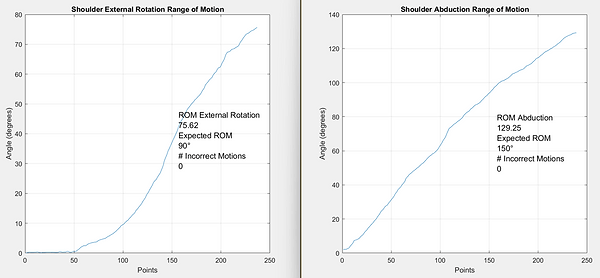STUDY OF COPPER’S ANTIMICROBIAL PROPERTIES
Technologies: Microsoft Powerpoint
Description
This research was done during a co-op position for the Department of Materials Science and Engineering under the supervision of Dr. Hatem Zurob in the Summer of 2020.
Throughout this co-op placement, I worked on COVID-19 initiatives, including copper research, and researched new alloys for biomedical implants and car manufacturing. Furthermore, throughout this term, I filmed demos and labs for the Structure and Properties of Materials class.
Throughout history, copper has been used for various applications in agriculture and healthcare. For example, copper was used to preserve water in ancient Egypt. This made copper an attractive metal to research for use in N95 masks.
Below is the research poster I presented during the Annual Summer Poster Showcase.
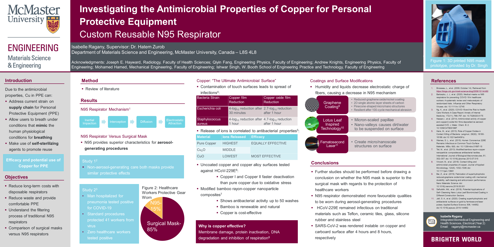Materials Science Demos
Technologies: InShot Video Editor
Description
These demonstrations were created during a co-op position for the Department of Materials Science and Engineering under the supervision of Dr. Hatem Zurob in the Summer of 2020.
Throughout this co-op placement, I filmed demos and labs for the Structure and Properties of Materials class and the materials section of the first-year engineering design course.
A playlist with all the demos can be found below. Various materials science-related topics are discussed, such as corrosion, shape memory alloys, diffusion, piezoelectric materials and more!
Portfolio Website
Technologies: HTML, CSS, JavaScript
Description
This portfolio website was created as an introduction to HTML, CSS and JavaScript. The site was created using a template from 'HTML5 UP!' as a starting point to understand the general syntax and structure. New features and customizations such as pop-ups, custom scroll bars and interactive features were then added. Interactive features such as the particles were created using the Particles JS library.
Check out some of the resources I used
- HTML5 UP!: Includes responsive HTML5 site templates that can be customized
- Particles JS: A JavaScript library for creating particles
- Codepen: Used to build, test and discover front-end code
The Frequency Newspaper
Technologies: Figma, Canva, Google Shared Drives
Description
The Frequency is an informative publication for the McMaster Engineering Society (MES). As a previous Frequency Co-Editor, I was responsible for organizing a team of student writers and graphic designers to create publications with my fellow Co-Editor. The articles were focused on the accomplishments of members of the McMaster Engineering Department, events happening in the community and creative pieces.
I also represented The Frequency on the Equity Committee which works towards ensuring that equity and inclusion concerns are being actively worked on within the McMaster Engineering Society.
Here are two of the editions released during my time as a co-editor.
CO DETECTION WATCH
Technologies: Python, Raspberry Pi, breadboard and components (buzzer, LCD screen, LEDs, gas sensor), Bluetooth
Description
I worked alongside three students to create this project. We created a wearable watch that acts as a preventative device to monitor carbon monoxide levels in the air. Our targetted end-users include workers, such as engineers, paramedics and miners.
I worked on the Python code and breadboard setup. The program I wrote allows for the incoming data from the gas sensor to be translated into sound, light and text messages using peripherals.
How it works
The Raspberry Pi was used as a "mini-computer" to house the code and provide power to components on the breadboard. The Grove Multichannel Gas Sensor was used to measure gas concentration in parts per million. The incoming data is filtered, and as concentrations of a gas increase, users are notified to alert them of the severity of the situation. A series of conditional statements were used in the code to specify the severity of the unsafe gas levels. A Bluetooth connection was used to send information from the Raspberry Pi to the user's cell phone.
Universal Bottle Cap
Technologies: Python, Raspberry Pi, breadboard and components (buzzer, LCD screen, LEDs, gas sensor), Bluetooth
Description
I collaborated with three students to create a device for a client to assist them in gripping and opening a water bottle. The client had fine motor deficits and pain that restricted their ability to twist and hold traditional bottles.
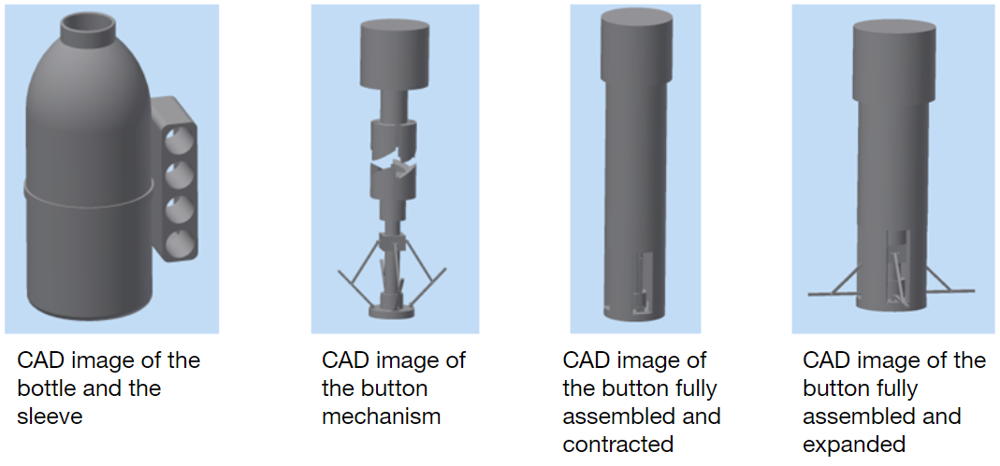How it works
The device was modelled in Autodesk Inventor Professor. To ensure a proper seal when the bottle is closed, the device contains a mechanical mechanism, where pushing down extends small rods that push against the inside of the bottle. The mechanism acts similar to a clickable pen, where the button requires more force to be deactivated, preventing potential accidents.
The video below demonstrates the button mechanism and how it expands and contracts (note: the bottle and button are not scaled to one another, and the button is enlarged).
BRAILLE READING DEVICE
Technologies: Autodesk Inventor Professional, Python, circuito.io
Description
This project was designed for the Hack The Month Hackathon in June 2020. Working alongside a team, I helped develop NTdot, a braille reading device to improve health literacy in the blind population and achieved first place in the competition.
Globally, around 217 million people have moderate to severe vision impairment, and 36 million are blind. More than half of the participants of a research report were unable to identify the name, dose, expiry date, instructions and interactions of their medication, and 90% of respondents usually relied on their caretakers. Our team proposed a braille device that can translate important information about a patient's medication to them via braille and sound, promoting independence and saving thousands of lives due to improved health literacy.
How it works
Doctors would share information about a patient's medication through RFID. For example, the RFID chip could be placed on the medication bottle. The patient would then be able to scan the chip on the device, and the information would get translated into braille through Python and a Rasberry Pi. The braille appears on the device and allows users to get information about their medication. A speaker is included for auditory reminders and could use text-to-speech software. Arrows will enable the patient to pan across the information.
Below is a playlist of videos demonstrating the device and its applications.
Custom Ostomy Bag
Description
Alongside three students, a custom ostomy bag was designed for a client. Our patient had a colostomy and used a two-piece system that included a flat skin barrier and a drainable ostomy pouch. The patient had sensitive skin and uneven skin contours around their ostomy. Our patient also experienced skin barrier adhesions and arthritis issues, making it difficult to cut the hole in the wafer to match the size of the changing stoma.
Design Features
- Silicone ring embedded within the skin barrier: maintain a good seal with the surrounding skin and easily stretched to fit the stoma
- Precut barrier: removes the time-consuming and difficult process of measuring and cutting the skin barrier for the patient
- Extended barrier size: provides more surface area for proper adherence to the skin
- Extended tab on the barrier-> allows for easier removal of the device
- Neodymium magnets on outlet valve: prevent leakage from the pouch and require less fine motor skills to open and close the pouch
- SLIPS material on the innermost surface of the pouch: antimicrobial, hydrophobic and non-wetting material
- Ceramide coating on silicone ring: helps soothe the skin and prevent any irritation
- Concentrated dyes outside the SLIPS layer: as the SLIPS layer degrades, some dye will then be released into the pouch to alert the patient that a new pouch is needed
Custom Hip Implants
Technologies: Autodesk Inventor Professional
Description
I used Autodesk Inventor to design a hip implant with my partner for our patient. A custom hip implant was designed for a fictitious patient with Rheumatoid arthritis and an allergy to metallic products.
A 3D model of the patient's femur was given. Measurement tools were used on Autodesk to customize the implant size to the patient.
Design Features
- Custom sizing: the implant seamlessly integrates into the medullary canal to replicate and replace the damaged bone
- Porous acetabular cup: allows the PMMA cement to adhere the implant to the acetabulu
- Bone flange: stops the implant from retracting into the bone, which would significantly reduce the implant's effectiveness
- Short stem design: preserves cortical bone to increase stability and preserves natural anatomy to reduce the chance of complications in the event of revision
- Two femoral Heads: provide an extensive range of motion with a lower chance of dislocation
- Triangular lattice: decreases the overall weight of the implant, reduces elastic modulus and creates an event stress distribution
Materials Used
| Material | Part of Implant where the Material was Used |
|---|---|
| Polyether ether ketone | Femoral stem |
| Ultra High Molecular Weight Polyethylene | Acetabular cup |
| Zirconia Platelet Toughened Alumina | Femoral heads |
-
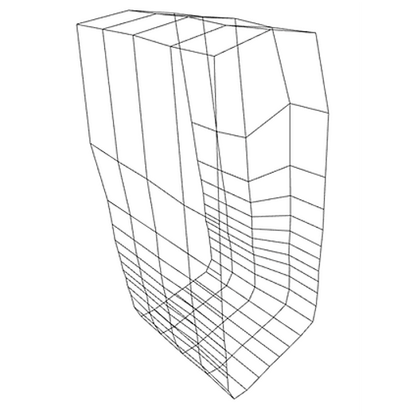Cost-Effective LIDAR Device
Using a microcontroller, time of flight sensor and stepper motor, a LIDAR device was created to create a 3D spatial mapping of the surrounding indoors.
Learn More -
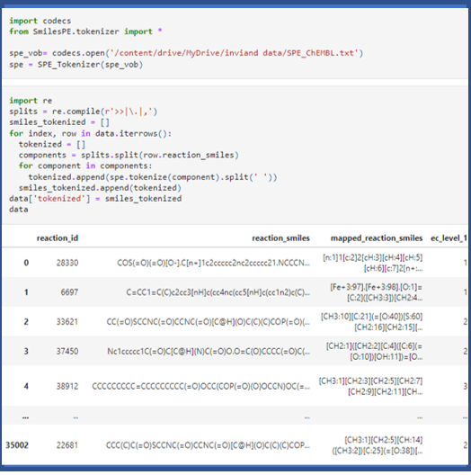Deep Learning and Chemistry
A classifier was trained to take in the reactants and products of a chemical reaction in the form of SMILES and translates them into a machine-readable format.
Learn More -
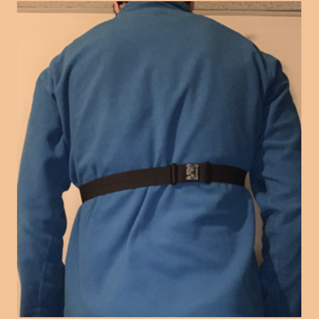Rotator Cuff Tear Rehabilitation Device
An absolute orientation sensor was used to monitor the motion of the user’s shoulder in order to track improvements in rotator cuff injuries.
Learn More -
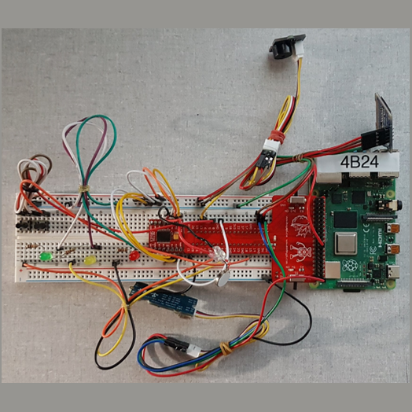CO Detection Watch
A gas sensor was used to track the levels of carbon monoxide and notify the user of unsafe levels via light, sound and text messages.
Learn More -
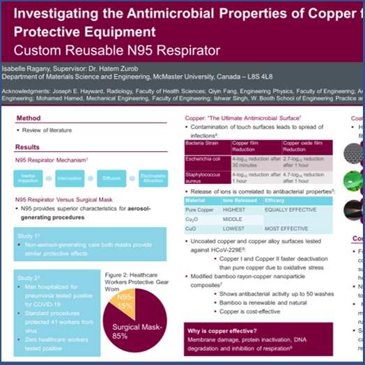Study of Copper’s Antimicrobial Properties
I researched copper and its antimicrobial properties for use in N95 marks throughout my first co-op term.
Learn More -
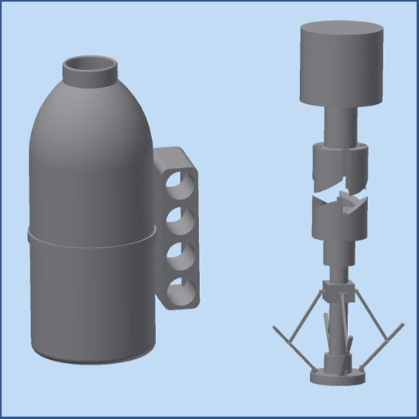Universal Bottle Cap
A device was designed for a client with fine motor defecits and pain to assist them in gripping and opening a water bottle.
Learn More -
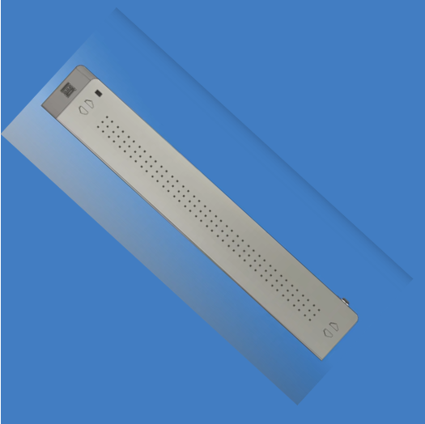Braille Reading Device
I collaborated with a team to propose a braille device that can translate important information about a patient’s medication to them via braille and sound.
Learn More -
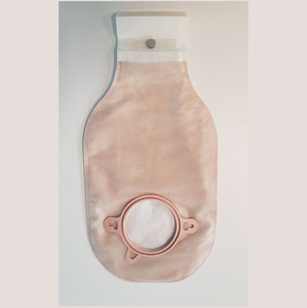Custom Ostomy Bag
A custom ostomy bag was designed for a patient with a colostomy who has sensitive skin, uneven skin contours and arthritis.
Learn More -
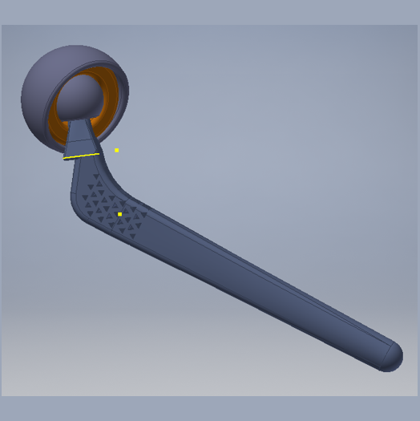Custom Hip Implant
I worked alongside a partner to design and model a custom hip implant with Autodesk Inventor Professional.
Learn More -
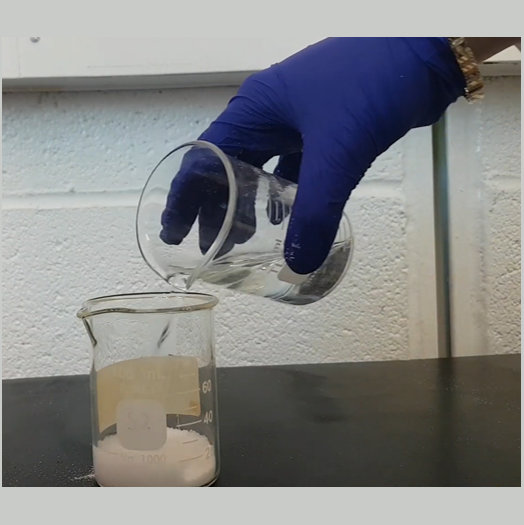Materials Science Demos
During my first co-op term, I filmed various demonstrations about different materials engineering and science concepts.
Learn More -
 The Frequency Newspaper
The Frequency NewspaperAs a co-editor of the informative publication for the McMaster Engineering Society, I was responsible for organizing a team of student writers and graphic designers.
Learn More -
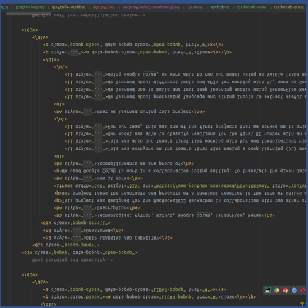Portfolio Website
This portfolio site was created to learn HTML, CSS and JavaScript.
Learn More